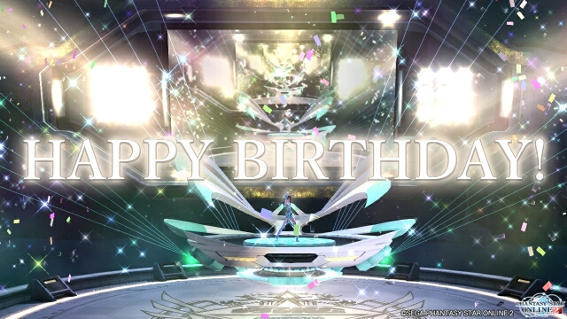
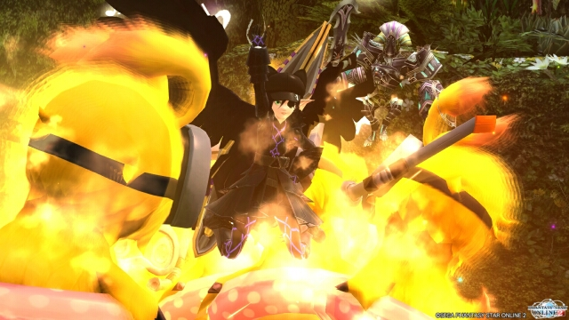
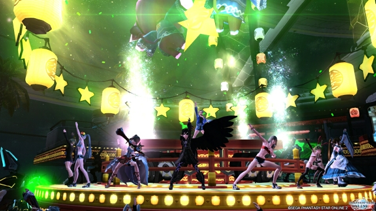
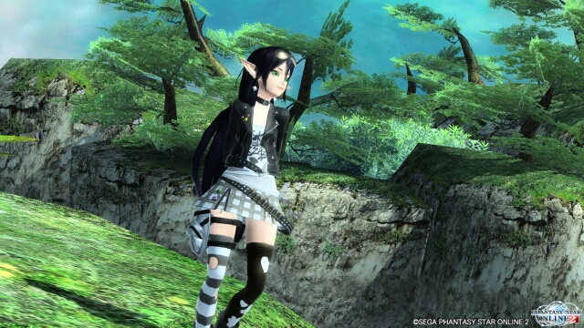

昨日も20才。今日も20才。

プロフィールというかキャラクターページが追加されました。何なんですかね、この隔月ペース更新は……。そしてプロフィールもPC用にしか追加してないという怠慢っぷり！ でもいいの！ やりたいことをやりたいようにやっていくの！
そしてちゃっかり誕生日です。同じ誕生日なのは芸能人なら深田恭子、男性声優なら石田彰、女性声優なら若林直美、キャラクターならクッキーモンスターです。（←テンプレ）いくつになったのと聞かれたら、とりあえず永遠の20才と答えます。17才とか18才だとお酒飲めないしね。さあ、君も永遠の20才教に入るのだ！！
2015/11/02
記事書けと言う話で

レスポンシブ化してみました。記事の一覧表示させるレイアウトが中々決まらず、こんな時期になってしまった。これでスマホでも上月ちゃん劇場が見られるようになりますね。メニューすら無いのだけれど！
次はキャラクターページ埋めたら、pjaxによるページ切り替えしてみたいなぁ。とか考えてます。
あとアークマのセリフも色々追加したり、別に個人的なページを作成したりなど、まだまだやりたいことは色々あります！
とりあえず現在どれだけ忙しいかという参考画像を貼っておきますね。ｘ。
～ シルバーウィーク最終日にて
2015/09/20
なーーーつーーーーーーっ！！！

暑い日々が続きます。夏バテ気味な上月ちゃんです。スイパラいきたい・ｘ・
そしてメンテ明けから報酬期間のはず。何も準備してないどころか、期間限定であと金200個集めないと……それで★13拾えたら万々歳だけどもね！
あとEP3の5章終盤にいい感じのSSスポットがあったので時間がある時にでも撮影に行きたいです。時間が…ない…ぐぬぬ…。
とりあえず今日でTeの極地が終わる予定なので、きっと報酬期間はずっとBrで極地やってます。
2015/07/29
上月ちゃん劇場リターンズ！

ふとWEBサイトを作りたくなる時ってありますよね！ というわけで数カ月ほどMMOで吟遊詩人的なことをやった後に戻って参りました、PSO2。４月から生活環境も変わってMMOやってる場合じゃない！ってなったわけですが、それでも忙しくて７月になるまでほとんど動けていませんでした……。
今回再開するにあたり、新たに見聞きした技術要素を取り入れたわけですがお気づきでしょうか！ あの黒い悪魔ことアークマがbot化してる！ とか、右クリックがリンクメニューになってる！ とか、そんなこんな。まあレイアウトはほとんど以前のままですけどね。中には計画中で未実装の機能もあるので、まだまだサイト作成は終わらんぜよ！
ところで私の★１３も未実装なのよな(´・ω・`)
2015/07/22